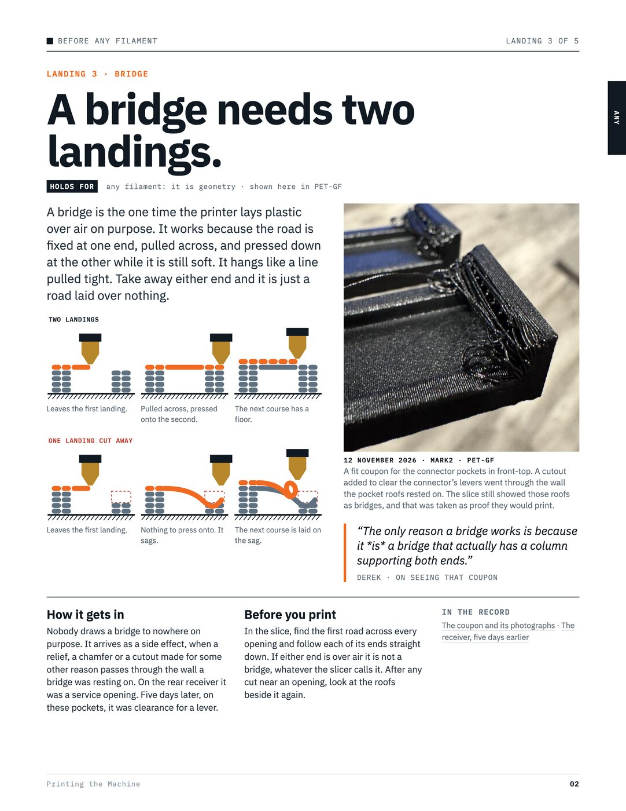

What this book is
Every page is one of our prints.
Nearly everything you can see or touch on the Home Soda Machine comes off two desktop printers. Getting there took nine months of prints that failed for reasons. This book is the reasons, each shown on the print that taught it.
On 5 April 2026, a month into the project, a section of general advice about 3D printing was deleted from the repository. An AI had written it, and it was not about anything we had printed.
Everything here is the opposite. Each page starts from a print that exists: its date, its printer, its plastic and a photograph. The rule at the top is what that print taught, and the page says how far the lesson has been tested.
It is sorted by plastic
Most of what a print teaches belongs to the plastic it was made of. PET-GF wants its fan off; soft TPU curls without it. A first layer that is right for one is wrong for the next. So after a short part on what is plain geometry, the book has a part for each plastic, and every page says which one it is about.
It says what it does not know
Still openmarks what one print suggested and nothing has confirmed, or a result that changed two things at once.
Its numbers do not go stale
A setting in the current recipe is read from its project file each time the book is put together. A number from a trial stays as it was measured, with its date.
It is written for agents too
The machine is designed and printed with AI agents, who start each day knowing none of this. Every page is a plain file in the repository, so what a person reads here and what an agent reads there are the same words.

12345The rule. One line you could say across a workbench.
Where it holds. Which plastic, printer, plate and nozzle the evidence comes from.
The print that taught it. Photographed, with its date and printer.
Derek’s words. Exactly as he typed them, beside an orange bar.
In the record. Links to the files that hold the evidence.
How to read a drawing
Plastic already printed.
The course being laid, still soft.
Printed to be thrown away: a fin or a support.
Something that was cut away.